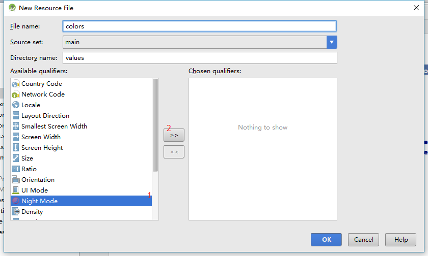

近些天看到一篇关于Support Library的日夜模式讲解的博客，感觉很实用，特意学习一番记录如下。
关于DayNight主题
Support Library 23.2.0之后，AppCompat有了一个新主题: Theme.AppCompat.DayNight, 这个主题可以根据系统时间或者当地经纬度等信息进行暗色和亮色主题的切换
效果图展示
如何使用DayNight主题
- 首先需要Android Support Library v7库在 23.2.0之上
1
| compile 'com.android.support:appcompat-v7:23.2.0'
|
1
| <style name="AppTheme" parent="Theme.AppCompat.DayNight.DarkActionBar">
|
- 然后创建夜间colors.xml, 将相关颜色的放在这里面
我们可以利用AS快速创建colors.xml(right)

1 2 3 4 5 6 7 8 9 10 11 12 13 14 15 16
| // colors.xml <?xml version="1.0" encoding="utf-8"?> <resources> <color name="colorPrimary">#3F51B5</color> <color name="colorPrimaryDark">#303F9F</color> <color name="colorAccent">#FF4081</color> <color name="white">#FFFFFF</color> </resources> // colors.xml(night) <?xml version="1.0" encoding="utf-8"?> <resources> <color name="colorPrimary">#242c58</color> <color name="colorPrimaryDark">#2f334e</color> <color name="colorAccent">#9890df</color> </resources>
|
因为我们还需要实现渐变的效果所以需要定义相关animation, 相关文件如下
1 2 3 4 5 6 7 8 9 10 11 12 13 14 15 16 17 18 19 20 21 22 23
| //Style <style name="WindowAnimationFadeInOut"> <item name="@android:windowEnterAnimation">@anim/fade_in</item> <item name="@android:windowExitAnimation">@anim/fade_out</item> </style> //@anim/fade_in <set xmlns:android="http://schemas.android.com/apk/res/android"> <alpha android:duration="1000" android:fromAlpha="0" android:interpolator="@android:anim/decelerate_interpolator" android:toAlpha="1.0" /> </set> //@anim/fade_out <set xmlns:android="http://schemas.android.com/apk/res/android"> <alpha android:duration="1500" android:fromAlpha="1.0" android:interpolator="@android:anim/decelerate_interpolator" android:toAlpha="0" /> </set>
|
相关代码控制
1 2 3 4 5 6 7 8 9 10 11 12 13 14 15 16 17 18 19 20 21
| private void changeDayNightMode() { // getFlag是自己定义在Application中的一个静态方法 获取一个flag值（Boolean）修改模式。 if (TestApp.getFlag()){ /* MODE_NIGHT_NO - 日间模式 * MODE_NIGHT_YES - 夜间模式 * MODE_NIGHT_AUTO - 根据时间自动切换 * MODE_NIGHT_FOLLOW_SYSTEM(Default) - 根据系统 */ AppCompatDelegate.setDefaultNightMode(AppCompatDelegate.MODE_NIGHT_NO); TestApp.changeFlag(); } else{ AppCompatDelegate.setDefaultNightMode(AppCompatDelegate.MODE_NIGHT_YES); TestApp.changeFlag(); } getWindow().setWindowAnimations(R.style.WindowAnimationFadeInOut); Logger.d(TestApp.getFlag()); // 会重新create整个Activity recreate(); }
|
Reference
- https://kingideayou.github.io/2016/03/07/appcompat_23.2_day_night/
- http://www.jianshu.com/p/f30ebec8b4ed
- http://imxie.cc/2016/07/12/Android-New-Day-Night-Swtich/